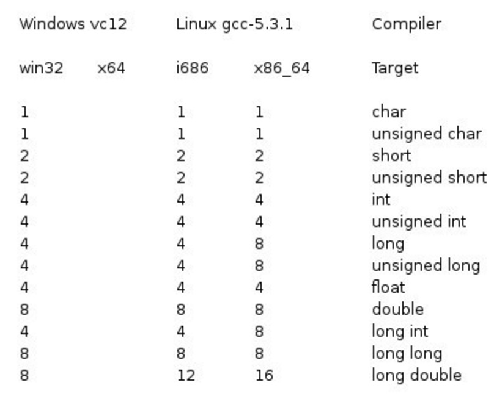

C++ データ型
プログラミング言語を使用してプログラミングを行う際には、さまざまな情報を格納するためにさまざまな変数を使用する必要があります。変数は、格納されている値のメモリ位置を保持します。つまり、変数を作成すると、メモリ内にいくつかの領域が確保されます。
さまざまなデータ型（文字型、ワイド文字型、整数型、浮動小数点型、倍精度浮動小数点型、ブール型など）の情報を格納する必要があるかもしれません。オペレーティングシステムは、変数のデータ型に基づいてメモリを割り当て、確保されたメモリに何を格納するかを決定します。
基本的な組み込み型
C++ は、プログラマに豊富な組み込みデータ型とユーザー定義データ型を提供します。次の表は、7つの基本的な C++ データ型を示しています。
| 型 | キーワード |
|---|---|
| ブール型 | bool |
| 文字型 | char |
| 整数型 | int |
| 浮動小数点型 | float |
| 倍精度浮動小数点型 | double |
| 無型 | void |
| ワイド文字型 | wchar_t |
実際、wchar_t は次のように由来しています：
typedef short int wchar_t;
したがって、wchar_t の実際のサイズは short int と同じです。
一部の基本型は、1つ以上の型修飾子を使用して修飾できます。
| 修飾子 | 説明 | 例 |
|---|---|---|
signed | 符号付き型を表します（デフォルト） | signed int x = -10; |
unsigned | 符号なし型を表します | unsigned int y = 10; |
short | 短整数型を表します | short int z = 100; |
long | 長整数型を表します | long int a = 100000; |
const | 定数を表し、値を変更できません | const int b = 5; |
volatile | 変数が予期せず変更される可能性があることを示し、コンパイラの最適化を禁止します | volatile int c = 10; |
mutable | クラスメンバーがオブジェクト内でconst変更できることを示します | mutable int counter; |
次の表は、さまざまな変数型がメモリに値を格納する際に必要なメモリ容量と、その型の変数が格納できる最大値と最小値を示しています。
注意：システムによって異なる場合があります。1バイトは8ビットです。
注意：デフォルトでは、int、short、long はすべて符号付き（signed）です。
注意：long int は8バイト、int はすべて4バイトです。初期の C コンパイラでは long int が4バイト、int が2バイトと定義されていましたが、新しい C/C++ 標準はこの初期の設定と互換性があります。
| データ型 | 説明 | サイズ（バイト） | 範囲/値の例 |
|---|---|---|---|
bool | ブール型。真または偽を表します | 1 | true 或 false |
char | 文字型。通常、ASCII 文字を格納するために使用されます | 1 | -128 から 127 または 0 から 255 |
signed char | 符号付き文字型 | 1 | -128 から 127 |
unsigned char | 符号なし文字型 | 1 | 0 から 255 |
wchar_t | ワイド文字型。Unicode 文字を格納するために使用されます | 2 または 4 | プラットフォームに依存します |
char16_t | 16ビット Unicode 文字型（C++11 で導入） | 2 | 0 から 65,535 |
char32_t | 32ビット Unicode 文字型（C++11 で導入） | 4 | 0 から 4,294,967,295 |
short | 短整数型 | 2 | -32,768 から 32,767 |
unsigned short | 符号なし短整数型 | 2 | 0 から 65,535 |
int | 整数型 | 4 | -2,147,483,648 から 2,147,483,647 |
unsigned int | 符号なし整数型 | 4 | 0 から 4,294,967,295 |
long | 長整数型 | 4 または 8 | プラットフォームに依存します |
unsigned long | 符号なし長整数型 | 4 または 8 | プラットフォームに依存します |
long long | 長長整数型（C++11 で導入） | 8 | -9,223,372,036,854,775,808 から 9,223,372,036,854,775,807 |
unsigned long long | 符号なし長長整数型（C++11 で導入） | 8 | 0 から 18,446,744,073,709,551,615 |
float | 単精度浮動小数点数 | 4 | 約 ±3.4e±38（6〜7桁の有効数字） |
double | 倍精度浮動小数点数 | 8 | 約 ±1.7e±308（15桁の有効数字） |
long double | 拡張精度浮動小数点数 | 8、12、または16 | プラットフォームに依存します |
C++11 で追加された型
| データ型 | 説明 | 例 |
|---|---|---|
auto | 自動型推論 | auto x = 10; |
decltype | 式の型を取得します | decltype(x) y = 20; |
nullptr | ヌルポインタ定数 | int* ptr = nullptr; |
std::initializer_list | 初期化リスト型 | std::initializer_list<int> list = {1, 2, 3}; |
std::tuple | タプル型。複数の異なる型の値を格納できます | std::tuple<int, float, char> t(1, 2.0, 'a'); |
注意：さまざまな型の記憶域サイズはシステムのビット数に関係しますが、現在一般的に使用されているのは64ビットシステムが主流です。
以下に、32ビットシステムと64ビットシステムの記憶域サイズの違いを示します（Windows では同じ）：

上の表からわかるように、変数のサイズはコンパイラや使用するコンピュータによって異なります。
次の例では、お使いのコンピュータ上のさまざまなデータ型のサイズを出力します。
例
この例では、endl を使用しています。endlこれは、各行の後に改行を挿入します。<<演算子は、複数の値を画面に出力するために使用されます。sizeof()演算子は、さまざまなデータ型のサイズを取得するために使用されます。
上記のコードをコンパイルして実行すると、次の結果が生成されます。結果は使用するコンピュータによって異なります。
type: ************size************** bool: 所占字节数：1 最大值：1 最小值：0 char: 所占字节数：1 最大值： 最小值：? signed char: 所占字节数：1 最大值： 最小值：? unsigned char: 所占字节数：1 最大值：? 最小值： wchar_t: 所占字节数：4 最大值：2147483647 最小值：-2147483648 short: 所占字节数：2 最大值：32767 最小值：-32768 int: 所占字节数：4 最大值：2147483647 最小值：-2147483648 unsigned: 所占字节数：4 最大值：4294967295 最小值：0 long: 所占字节数：8 最大值：9223372036854775807 最小值：-9223372036854775808 unsigned long: 所占字节数：8 最大值：18446744073709551615 最小值：0 double: 所占字节数：8 最大值：1.79769e+308 最小值：2.22507e-308 long double: 所占字节数：16 最大值：1.18973e+4932 最小值：3.3621e-4932 float: 所占字节数：4 最大值：3.40282e+38 最小值：1.17549e-38 size_t: 所占字节数：8 最大值：18446744073709551615 最小值：0 string: 所占字节数：24 type: ************size**************
派生データ型
| データ型 | 説明 | 例 |
|---|---|---|
数组 | 同じ型の要素のコレクション | int arr[5] = {1, 2, 3, 4, 5}; |
指针 | 変数のメモリアドレスを格納する型 | int* ptr = &x; |
引用 | 変数の別名 | int& ref = x; |
函数 | 関数型。関数のシグネチャを表します | int func(int a, int b); |
结构体 | ユーザー定義のデータ型。複数の異なる型のメンバーを含むことができます | struct Point { int x; int y; }; |
类 | ユーザー定義のデータ型。カプセル化、継承、ポリモーフィズムをサポートします | class MyClass { ... }; |
联合体 | 複数のメンバーが同じメモリブロックを共有します | union Data { int i; float f; }; |
枚举 | ユーザー定義の整数定数集合 | enum Color { RED, GREEN, BLUE }; |
型エイリアス
| エイリアス | 説明 | 例 |
|---|---|---|
typedef | 既存の型にエイリアスを定義する | typedef int MyInt; |
using | 既存の型にエイリアスを定義する（C++11で導入） | using MyInt = int; |
標準ライブラリ型
| データ型 | 説明 | 例 |
|---|---|---|
std::string | 文字列型 | std::string s = "Hello"; |
std::vector | 動的配列 | std::vector<int> v = {1, 2, 3}; |
std::array | 固定サイズ配列（C++11で導入） | std::array<int, 3> a = {1, 2, 3}; |
std::pair | 2つの値を格納するコンテナ | std::pair<int, float> p(1, 2.0); |
std::map | キーと値のペアのコンテナ | std::map<int, std::string> m; |
std::set | 一意な値の集合 | std::set<int> s = {1, 2, 3}; |
typedef 宣言
あなたは使用できますtypedef既存の型に新しい名前を付けることができます。以下はtypedefを使用して新しい型を定義する構文です：
typedef type newname;
例えば、次の文はコンパイラにfeetがintの別名であることを伝えます：
typedef int feet;
これで、次の宣言は完全に合法であり、整数型変数distanceを作成します：
feet distance;
列挙型
列挙型(enumeration)はC++における派生データ型の一種で、ユーザーが定義した複数の列挙定数の集合です。
変数がわずか数種類の可能な値しか持たない場合、列挙(enumeration)型として定義できます。「列挙」とは変数の値を一つずつ列挙することを指し、変数の値は列挙された値の範囲内に限定されます。
列挙を作成するには、キーワードが必要ですenum。列挙型の一般的な形式は次のとおりです：
enum 枚举名{
标识符[=整型常数],
标识符[=整型常数],
...
标识符[=整型常数]
} 枚举变量;
列挙が初期化されていない場合、つまり「=整数定数」を省略した場合、最初の識別子から始まります。
例えば、次のコードは色の列挙を定義し、変数cの型はcolorです。最後に、cには"blue"が代入されます。
enum color { red, green, blue } c;
c = blue;
デフォルトでは、最初の名前の値は0、2番目の名前の値は1、3番目の名前の値は2、というようになります。ただし、初期値を追加するだけで、名前に特別な値を与えることもできます。例えば、次の列挙では、greenの値は5です。
enum color { red, green=5, blue };
ここでは、blueの値は6です。デフォルトでは、各名前は前の名前より1大きくなりますが、redの値は依然として0です。
型変換
型変換とは、あるデータ型の値を別のデータ型の値に変換することです。
C++には4つの型変換があります：静的変換、動的変換、定数変換、再解釈変換です。
静的キャスト（Static Cast）
静的変換は、あるデータ型の値を別のデータ型の値に強制変換することです。
静的変換は通常、型が類似したオブジェクト間の変換に使用されます。例えば、int型をfloat型に変換する場合です。
静的変換は実行時の型チェックを行わないため、実行時エラーを引き起こす可能性があります。
例
動的キャスト（Dynamic Cast）
動的変換（dynamic_cast）は、C++で継承階層内でダウンキャスト（downcasting）を行うためのメカニズムです。
動的変換は通常、基底クラスポインタまたは参照を派生クラスポインタまたは参照に変換するために使用されます。
動的変換は実行時に型チェックを行います。変換に失敗した場合、ポインタ型にはnullptrが返され、参照型にはstd::bad_cast例外がスローされます。
構文：
dynamic_cast<目标类型>(表达式)
ターゲット型：ポインタ型または参照型である必要があります。
式：変換する必要がある基底クラスポインタまたは参照です。
例：ポインタ型の動的キャスト
出力：
Derived class method
例：参照型の動的キャスト
#include <typeinfo>
class Base {
public:
virtual ~Base() = default; // 基底クラスには仮想関数が必要
};
class Derived : public Base {
public:
void show() {
std::cout << "Derived class method" << std::endl;
}
};
int main() {
Derived derived_obj;
Base& ref_base = derived_obj; // 基底クラス参照が派生クラスオブジェクトにバインド
try {
// 基底クラス参照を派生クラス参照に変換
Derived& ref_derived = dynamic_cast<Derived&>(ref_base);
ref_derived.show(); // 変換成功、派生クラスのメソッドを呼び出す
} catch (const std::bad_cast& e) {
std::cout << "Dynamic cast failed: " << e.what() << std::endl;
}
return 0;
}
出力：
Derived class method
| 特徴 | ポインタ型 | 参照型 |
|---|---|---|
| 変換失敗時の戻り値 | 返すnullptr | スローするstd::bad_cast例外 |
| 適用シーン | ダウンキャスト、実行時型チェック | ダウンキャスト、実行時型チェック |
| パフォーマンスオーバーヘッド | 高い | 高い |
| 基底クラスの要件 | 仮想関数が必要 | 仮想関数が必要 |
定数キャスト（Const Cast）
定数変換は、const型のオブジェクトを非const型のオブジェクトに変換するために使用されます。
定数変換はconst属性を取り除くためにのみ使用でき、オブジェクトの型を変更することはできません。
例
再解釈キャスト（Reinterpret Cast）
再解釈変換は、あるデータ型の値を別のデータ型の値として再解釈します。通常、異なるデータ型間の変換に使用されます。
再解釈変換は型チェックを一切行わないため、未定義の動作を引き起こす可能性があります。
会社のソフトウェアテストの女性が怖い
hui***an@reallytek.com
列挙の例テスト：
#include <iostream> using namespace std; int main(){ enum days{one, two, three}day; day = one; switch(day){ case one: cout << "one" << endl; break; case two: cout << "two" << endl; break; default: cout << "three" << endl; break; } return 0; }会社のソフトウェアテストの女性が怖い
hui***an@reallytek.com
000
000***0.com
列挙型はmain内で定義する必要はありません:
#include <iostream> using namespace std; enum time { first,second, third,forth,fifth }; int main() { enum time a=fifth; if (a==fifth) { cout << "Succeed!"; } return 0; }000
000***0.com
风写月
www***s@qq.com
列挙とswitchで順位を判定する例
#include<iostream> using namespace std; int main() { enum rank { first,second,third }; int nRank=1; switch (nRank) { case first: cout << "第一名"; break; case second: cout << "第二名"; break; case third: cout << "第三名"; break; default: break; } // system("pause"); return 0; }风写月
www***s@qq.com
knight
106***3973@qq.com
typedefに関するいくつかの説明：
knight
106***3973@qq.com
突然の幸福
292***0456@qq.com
参考URL
size_t はC言語の頃からあります。
これは一種の整数型型で、中に保存されているのはintやlongのような整数です。この整数はサイズ(size)を記録するために使われます。size_t の正式名称は size type であり、つまりサイズを記録するためのデータ型です。
通常、私たちはsizeof(XXX)操作を使用し、この操作で得られる結果はsize_t型です。
size_t型のデータは実際には整数を保存しているため、加減乗除もできますし、intに変換してint型の変数に代入することもできます。
同様に、wchar_t, ptrdiff_t。
wchar_tは wide char type であり、ワイド文字を記録するためのデータ型です。
ptrdiff_t は pointer difference type であり、2つのポインタ間の距離を記録するためのデータ型です。
通常、size_t と ptrdiff_t はどちらもtypedefを使用して実装されています。どこかのヘッダファイルで次のような文を見つけるかもしれません：
一方、wchar_t は少し異なります。一部の古いコンパイラでは、wchar_t もtypedefを使用して実装されている場合がありますが、新しい標準では wchar_t はすでにC/C++言語のキーワードであり、wchar_t型の地位はcharやintと同等になっています。
標準C/C++の構文では、int float char boolなどの基本データ型だけがあり、size_tやsize_typeは、後のプログラマーが記憶しやすいように定義した、基本データ型の変形型で理解しやすいものです。例：typedef int size_t;定義しましたsize_t整数型とします。
int i; // 定义一个 int 类型的变量 i size_t size=sizeof(i); // 用 sizeof 操作得到变量i的类型的大小 // 这是一个size_t类型的值 // 可以用来对一个size_t类型的变量做初始化 i=(int)size; // size_t 类型的值可以转化为 int 类型的值 char c='a'; // c 保存了字符 a，占一个字节 wchar_t wc=L'a'; // wc 保存了宽字符 a，占两个字节 // 注意 'a' 表示字符 a，L'a' 表示宽字符 a int arr[]={1,2,3,4,5}; // 定义一个数组 int *p1=&arr[0]; // 取得数组中元素的地址，赋值给指针 int *p2=&arr[3]; ptrdiff_t diff=p2-p1; // 指针的减法可以计算两个指针之间相隔的元素个数 // 所得结果是一个 ptrdiff_t 类型 i=(int)diff; // ptrdiff_t 类型的值可以转化为 int 类型的值突然の幸福
292***0456@qq.com
参考アドレス
RealRookie
105***0686@qq.com
1. 各列挙要素は宣言時に整数値が割り当てられ、デフォルトでは0から始まり、1ずつ加算されます。
#include <iostream> using namespace std; int main() { enum Weekend{Zero,One,Two,Three,Four}; int a,b,c,d,e; a=Zero; b=One; c=Two; d=Three; e=Four; cout<<a<<","<<b<<","<<c<<","<<d<<","<<e<<endl; return 0; }2. 列挙型を定義するときに列挙要素に値を代入することもできます。この場合、代入された列挙値は代入した値となり、代入されていない他の列挙値は前の列挙値に1を加えた値になります。
#include <iostream> using namespace std; int main() { enum Weekend{Zero,One,Two=555,Three,Four}; int a,b,c,d,e; a=Zero; b=One; c=Two; d=Three; e=Four; cout<<a<<","<<b<<","<<c<<","<<d<<","<<e<<endl; return 0; }RealRookie
105***0686@qq.com
Alvin
xix***aha.2008@163.com
typedef と #define の違い
1. 実行時間の違い
キーワード typedef はコンパイル段階で有効です。コンパイル段階であるため、typedef には型チェックの機能があります。
#define はマクロ定義であり、プリプロセス段階、つまりコンパイルの前に行われます。単純で機械的な文字列置換のみを行い、一切のチェックは行いません。
【例1.1】typedef は対応する型チェックを行います：
typedef unsigned int UINT; void func() { UINT value = "abc"; // error C2440: 'initializing' : cannot convert from 'const char [4]' to 'UINT' cout << value << endl; }【例1.2】#define は型チェックを行いません：
// #define用法例子： #define f(x) x*x int main() { int a=6, b=2, c; c=f(a) / f(b); printf("%d\n", c); return 0; }プログラムの出力結果は 36 です。根本的な原因は #define が単なる文字列置換であることにあります。
2、機能の違い
typedef は型のエイリアスの定義、プラットフォームに依存しないデータ型の定義、struct との組み合わせなどに使用されます。
#define は型にエイリアスを付けるだけでなく、定数、変数、コンパイルスイッチなどを定義することもできます。
3、スコープの違い
#define にはスコープの制限がなく、以前に定義されたマクロであれば、以降のプログラムで使用できます。
一方、typedef には独自のスコープがあります。
【例3.1】スコープの制限がなく、以前に定義されていれば使用できます
void func1() { #define HW "HelloWorld"; } void func2() { string str = HW; cout << str << endl; }【例3.2】一方、typedef には独自のスコープがあります
void func1() { typedef unsigned int UINT; } void func2() { UINT uValue = 5;//error C2065: 'UINT' : undeclared identifier }【例3.3】
class A { typedef unsigned int UINT; UINT valueA; A() : valueA(0){} }; class B { UINT valueB; //error C2146: syntax error : missing ';' before identifier 'valueB' //error C4430: missing type specifier - int assumed. Note: C++ does not support default-int };上記の例では、クラスBでUINTを使用するとエラーになります。UINTはクラスAのスコープ内でのみ有効だからです。さらに、クラス内でtypedefを使用して定義された型エイリアスには対応するアクセス権限もあります。【例3.4】：
class A { typedef unsigned int UINT; UINT valueA; A() : valueA(0){} }; void func3() { A::UINT i = 1; // error C2248: 'A::UINT' : cannot access private typedef declared in class 'A' }一方、UINTにpublicアクセス権限を付けると、コンパイルが通ります。
【例3.5】：
class A { public: typedef unsigned int UINT; UINT valueA; A() : valueA(0){} }; void func3() { A::UINT i = 1; cout << i << endl; }4、ポインタに対する操作
両者がポインタ型を修飾する場合、その働きは異なります。
typedef int * pint; #define PINT int * int i1 = 1, i2 = 2; const pint p1 = &i1; //p不可更改，p指向的内容可以更改，相当于 int * const p; const PINT p2 = &i2; //p可以更改，p指向的内容不能更改，相当于 const int *p；或 int const *p； pint s1, s2; //s1和s2都是int型指针 PINT s3, s4; //相当于int * s3，s4；只有一个是指针。 void TestPointer() { cout << "p1:" << p1 << " *p1:" << *p1 << endl; //p1 = &i2; //error C3892: 'p1' : you cannot assign to a variable that is const *p1 = 5; cout << "p1:" << p1 << " *p1:" << *p1 << endl; cout << "p2:" << p2 << " *p2:" << *p2 << endl; //*p2 = 10; //error C3892: 'p2' : you cannot assign to a variable that is const p2 = &i1; cout << "p2:" << p2 << " *p2:" << *p2 << endl; }結果：
Alvin
xix***aha.2008@163.com
pjs9115916
pan***ongcumt@126.com
例えば、FALSE という浮動小数点型を定義する場合、ターゲットプラットフォーム1では、最高精度の型を次のように表します：
long double をサポートしていないプラットフォーム2では、次のように変更します：
double すらサポートしていないプラットフォーム3では、次のように変更します：
つまり、クロスプラットフォームの場合、typedef 自体を変更するだけでよく、他のソースコードを一切変更する必要はありません。
標準ライブラリはこのテクニックを広く使用しています。例えば size_t です。
また、typedef は型の新しいエイリアスを定義するものであり、単純な文字列置換ではないため、マクロよりも堅牢です（マクロでも上記の用途を実現できる場合もありますが）。
pjs9115916
pan***ongcumt@126.com
Beta Shen
sjg***10414@qq.com
符号付きと符号なし整数の例（注意：テストプラットフォームはubuntu 14.04 32bit、gcc 4.8です）
#include <iostream> using namespace std; int main() { int n = 0; n--; unsigned int u = (unsigned int)n; unsigned long long int v = (unsigned long long int)n; cout << "Unsigned int value for " << n << " is " << u << "(0x" << hex << u << ")" << endl; cout << "0x" << u << " increase 1 is " << (u+1) << endl; cout << "Unsigned long long int value for " << dec << n << " is " << v << "(0x" << hex << v << ")" << endl; cout << "0x" << v << " increase 1 is " << (v+1) << endl; }出力結果は次のとおりです：
Beta Shen
sjg***10414@qq.com
Mars.CN
suo***g123@126.com
列挙型を便利に使用するために、typedef と組み合わせて使用するべきです。例えば：
typedef enum BAYER_PATTERN{ BAYER_RG=0, BAYER_BG, BAYER_GR, BAYER_GB }BAYER_PATTERN;使用するときは、もう...する必要はなくenum BAYER_PATTERN color = BAYER_RG;、直接使用できます：
Mars.CN
suo***g123@126.com
万能な木头君
inc***e@163.com
使用できますtypedef型にエイリアスを追加します：
もちろん、...を使用することもできますusing：
見てわかるように、2番目の方が可読性が高いです。
また、using はテンプレート環境ではより強力です。
テンプレートパラメータが int であるクラス grid があると仮定すると、次のようにできます：
では、void を返し、int パラメータを1つ持つ関数への関数ポインタを宣言するにはどうすればよいでしょうか？
おそらく...を使用できますtypedef：
見てわかるように、可読性が非常に低いです。では using を使用する場合はどうでしょうか？
using を使用すると明らかに理解しやすくなります：
したがって、常に using を優先的に使用してください。
では、関数ポインタをパラメータとして渡す場合はどうでしょうか？
void func(void(*f1)(int)){ //... }これは using では実現できません。
しかし、<functional> 内の function を使用すると、より適切にタスクを完了できます：void func(function<void(int)>f1){ //... }したがって、できるだけ...を使用しないようにしてくださいtypedef。
万能な木头君
inc***e@163.com
clara
137***6875@qq.com
1、reinterpret_castreinterpret_cast和static_castどちらも C++ の型変換演算子ですが、用途と安全性において顕著な違いがあります。reinterpret_castほぼ任意の型間で低レベルで、型チェックがほとんどない変換を行うために使用されます。この変換はデータをビット単位で直接再解釈するため、最も安全ではない変換です。主に以下の用途で使用されます：この変換は一切のチェックを行わないため、プログラマはこの変換が妥当で安全であることを保証する必要があります。
2、static_caststatic_cast関連する型間での型変換に使用され、比較的安全でコンパイル時の型チェックが行われます。以下の場合に適しています：int到float。void*、逆も同様です。clara
137***6875@qq.com